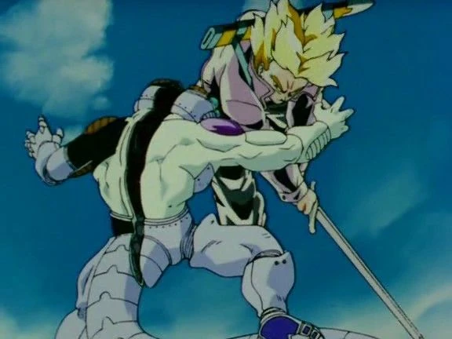
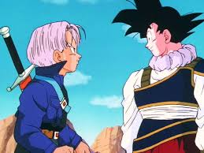
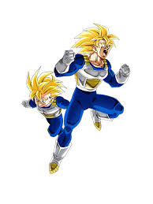
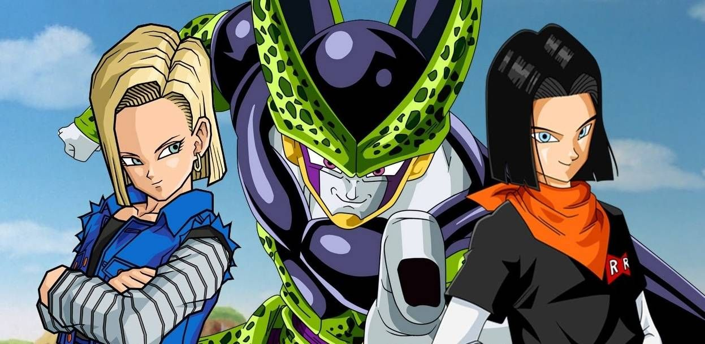

¡Bienvenido a la aventura de la Saga de Cell!
La saga de Cell comienza tras la derrota de Freezer y la llegada de los androides. Trunks del futuro viaja al pasado para advertir a los Guerreros Z sobre la aparición de dos androides extremadamente poderosos, creados por el Dr. Gero, un científico del Ejército de la Red Ribbon. Estos androides, #17 y #18, causarán la destrucción en el futuro de Trunks.
Mientras los Guerreros Z lidian con los androides, surge una nueva amenaza: Cell, un bio-androide creado por el Dr. Gero utilizando células de los mejores guerreros del universo. Cell tiene la capacidad de absorber a otros seres para aumentar su poder, y su objetivo es absorber a los androides #17 y #18 para alcanzar su forma perfecta.
Ante la creciente amenaza de Cell, Goku decide que él y su hijo Gohan deben entrenar intensamente para aumentar su poder. Para ello, se dirigen a la Sala del Tiempo y el Espíritu, un lugar especial donde el tiempo pasa de manera diferente: un día en el exterior equivale a un año dentro de la sala. Durante su tiempo en la sala, Goku y Gohan entrenan rigurosamente. Goku se enfoca en enseñarle a Gohan cómo controlar y aumentar su poder de Super Saiyan, buscando que Gohan alcance un nuevo nivel de poder. Bajo la tutela de su padre, Gohan entrena con una intensidad sin precedentes, enfrentando desafíos físicos y mentales que lo preparan para la inminente batalla contra Cell.
- 
- 
- 
- 
-